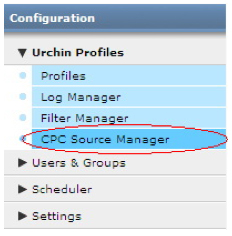
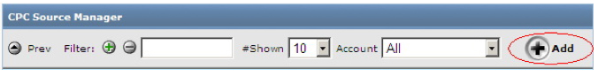
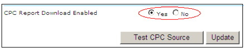
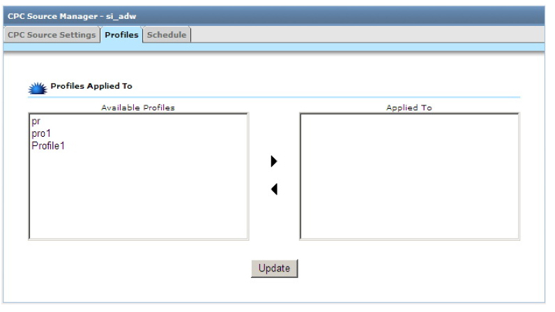
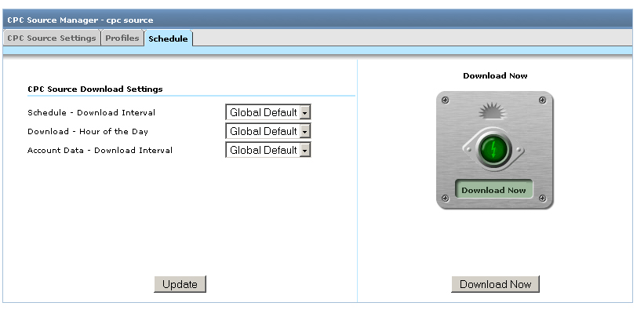

Sources de CPC (coût par clic) (Urchin 6.5+)
Urchin 6.5 propose un nouveau type de source de données : la source de CPC (coût par clic). Les sources de CPC sont relativement similaires aux sources de journal et permettent l'extraction automatique des données de campagne CPC à partir de sources externes. Elles sont associées aux profils existants tels que les sources du journal et les filtres. Grâce aux sources de CPC, il est possible d'inclure des données CPC dans les rapports Urchin. La création des sources de CPC est possible pour Google AdWords (Urchin 6.5+) et Yahoo! Search Marketing (Urchin 6.6+).
Remarque : Les limitations de l'édition "Pour démarrer" d'AdWords empêchent d'utiliser les sources de CPC avec les comptes de cette édition. Pour avoir accès aux sources de CPC, vous devez donc passer à l'édition Standard d'AdWords.
Remarque importante concernant les mises à niveau de la version 6.500 vers la version 6.501 : Lorsque vous passez de la version 6.500 à la version 6.501, vous devez supprimer manuellement vos anciennes données de CPC. Pour ce faire, vous devez supprimer tous les éléments contenus dans les répertoires suivants :
<path_to_urchin_6500_installation>/data/cpc/... <path_to_urchin_6500_installation>/data/history/cpc/...
Gestionnaire de sources de CPC
Les informations relatives au gestionnaire de sources de CPC sont disponibles dans la section "Configuration" > "Profils Urchin" (Urchin 6.5 +).

Le gestionnaire de sources de CPC affiche la liste des sources de CPC configurées dans la session actuelle d'Urchin. Cette liste contient également les contrôles d'interface permettant à l'administrateur de créer et de modifier les sources de CPC.
Création d'une source de CPC
Pour ajouter et configurer une nouvelle source de CPC, cliquez sur le bouton "Ajouter" en haut à droite du gestionnaire de sources de CPC.

Cette opération lance l'"assistant d'ajout de sources de CPC", qui vous guide lors des étapes d'ajout et de configuration d'une source de CPC.
Lors de la première étape de l'assistant, fournissez les informations suivantes :
- Compte facultatif : indiquez le compte auquel sera associée la nouvelle source de CPC ajoutée (mode Data Center uniquement).
- Nom de la source de CPC : nom de la source ajoutée.
- Type de source de CPC :
Google AdWords
E-mail :* adresse e-mail de connexion qui permet d'accéder au compte AdWords concerné ou informations de connexion à un compte CM.
- Mot de passe :* mot de passe du compte de connexion.
Jeton de développeur : chaîne permettant d'identifier de façon unique un développeur agréé de l'API AdWords (facultatif). Urchin est fourni avec un jeton de développeur par défaut. Vous pouvez par conséquent laisser ce champ vide à moins que vous ne souhaitiez utiliser votre propre jeton de développeur.
Jeton d'application : jeton d'application utilisé pour accéder à l'API AdWords. Comme pour le jeton de développeur, vous pouvez laisser ce champ vide.
- E-mail du client : dans le cas d'une connexion à un Centre multicompte (l'adresse e-mail permet de se connecter à un compte CM), ce champ contient l'adresse e-mail de connexion permettant d'accéder au compte client.
Identifiant client : dans le cas d'une connexion à un Centre multicompte, numéro d'identifiant client (au format 123-456-7890) du compte AdWords concerné. Ce numéro figure en haut à droite de l'écran Google AdWords Il est possible de fournir cet élément à la place de l'adresse e-mail du client.
Vous pouvez valider vos paramètres de source de CPC en appuyant sur le bouton "Tester la source de CPC".

Yahoo! Search Marketing
- Nom d'utilisateur :*nom d'utilisateur permettant d'accéder au compte YSM. Il peut s'agir de l'adresse e-mail de l'annonceur ou de l'agence accédant au rapport pour le compte de l'annonceur.
- Mot de passe :* mot de passe permettant d'accéder au compte YSM.
- Numéro de compte administrateur :* identifiant du compte administrateur de l'annonceur.
- Identifiant de compte :* identifiant du compte de l'annonceur.
- Clé de licence : clé de licence de l'utilisateur connecté, annonceur ou agence.
- Pour le compte de (nom d'utilisateur) : nom d'utilisateur pour le compte duquel l'annonceur agit. Il n'est requis que si l'identifiant de connexion est celui d'une agence et non de l'annonceur (facultatif).
- Pour le compte de (mot de passe) : mot de passe de l'utilisateur pour le compte duquel l'annonceur agit (facultatif).
Cliquez sur le bouton 'Terminer' pour finaliser la procédure.

Modification de la source de CPC
Une fois la source de CPC ajoutée, vous pouvez modifier ses paramètres, ou encore la supprimer ou planifier son téléchargement.

Pour modifier les paramètres de source de CPC, cliquez sur le bouton "Modifier" en regard de la source de CPC de votre choix.

Vous pouvez modifier les paramètres de connexion d'un compte AdWords ou YSM et activer ou désactiver les futurs téléchargements de cette source de CPC. REMARQUE : même si vous décidez de désactiver les futurs téléchargements de rapports, les profils associés à cette source de CPC continueront d'utiliser les rapports déjà téléchargés.
Vous pouvez associer votre source de CPC à un ou plusieurs profils existants à partir de l'onglet 'Profils'. La liste des profils disponibles pour association est limitée au compte Urchin actuel. Les données CPC provenant des sources de CPC associées figureront dans ces rapports de profils.

Planification de la source de CPC
L'onglet "Planifier" de l'écran Modifier la source de CPC permet de définir les paramètres de téléchargement de source de CPC :
- Planifier - Intervalle de téléchargement : le téléchargement de source de CPC se déroule en deux phases. La première phase consiste à valider l'identification du CPC, puis à envoyer une demande de rapport au serveur CPC. Au cours de la seconde phase, la disponibilité du rapport est vérifiée à intervalle régulier, jusqu'à ce que celui-ci soit effectivement disponible. La seconde phase se termine une fois le rapport téléchargé. Il peut s'écouler un certain temps avant qu'un rapport ne soit disponible sur le serveur. Ce délai varie en fonction du nombre de campagnes dans le compte, du volume de données récupérées, de la charge actuelle des serveurs, etc. Cet intervalle détermine le moment où Urchin vérifie la disponibilité du rapport une fois que ce dernier a été demandé. Il est conseillé de définir des valeurs élevées pour cet intervalle, tout particulièrement pour les grands comptes générant un volume important de clics.
- Télécharger - Heure du jour : cette option vous permet de définir une heure de la journée pour effectuer les téléchargements du rapport mis à jour de cette source de CPC. IMPORTANT : les données de CPC sont extraites selon un calendrier quotidien (et non horaire). Par conséquent, nous vous recommandons vivement d'attendre au minimum deux heures après la fin de la journée dans le fuseau horaire appliqué à votre compte AdWords ou YSM avant d'effectuer le téléchargement. Vous avez ainsi l'assurance de disposer de toutes les données CPC du jour disponibles sur les serveurs AdWords et YSM. Il convient par ailleurs de planifier les profils avec les sources de CPC de manière à lancer leur exécution après le téléchargement des données CPC. Vous pourrez ainsi exploiter les données de CPC les plus récentes dans vos rapports.
- Données de compte - Intervalle de téléchargement (uniquement pour AdWords dans Urchin 6.6+) : cette option vous permet de définir l'intervalle de téléchargement pour la structure de compte AdWords. Vous ne pourrez pas afficher les métadonnées de campagne ou de mot clé, ni utiliser le Générateur de mots clés, l'outil Copier la campagne et le Gestionnaire de balises AdWords avant d'avoir téléchargé la structure de compte AdWords.

L'onglet "Mise à jour de la source de CPC" de l'écran "Paramètres globaux" permet de définir les paramètres globaux par défaut pour le téléchargement des sources de CPC.